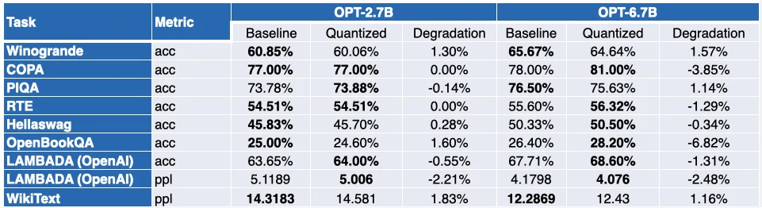

Published: 2023-05-16
Originally published at https://huggingface.co/blog/generative-ai-models-on-intel-cpu
Large language models (LLMs) are taking the machine learning world by storm. Thanks to their Transformer architecture, LLMs have an uncanny ability to learn from vast amounts of unstructured data, like text, images, video, or audio. They perform very well on many task types , either extractive like text classification or generative like text summarization and text-to-image generation.
As their name implies, LLMs are large models that often exceed the 10-billion parameter mark. Some have more than 100 billion parameters, like the BLOOM model. LLMs require lots of computing power, typically found in high-end GPUs, to predict fast enough for low-latency use cases like search or conversational applications. Unfortunately, for many organizations, the associated costs can be prohibitive and make it difficult to use state-of-the-art LLMs in their applications.
In this post, we will discuss optimization techniques that help reduce LLM size and inference latency, helping them run efficiently on Intel CPUs.
LLMs usually train with 16-bit floating point parameters (a.k.a FP16/BF16). Thus, storing the value of a single weight or activation value requires 2 bytes of memory. In addition, floating point arithmetic is more complex and slower than integer arithmetic and requires additional computing power.
Quantization is a model compression technique that aims to solve both problems by reducing the range of unique values that model parameters can take. For instance, you can quantize models to lower precision like 8-bit integers (INT8) to shrink them and replace complex floating-point operations with simpler and faster integer operations.
In a nutshell, quantization rescales model parameters to smaller value ranges. When successful, it shrinks your model by at least 2x, without any impact on model accuracy.
You can apply quantization during training, a.k.a quantization-aware training ( QAT ), which generally yields the best results. If you’d prefer to quantize an existing model, you can apply post-training quantization ( PTQ ), a much faster technique that requires very little computing power.
Different quantization tools are available. For example, PyTorch has built-in support for quantization . You can also use the Hugging Face Optimum Intel library, which includes developer-friendly APIs for QAT and PTQ.
Recent studies [1] [2] show that current quantization techniques don’t work well with LLMs. In particular, LLMs exhibit large-magnitude outliers in specific activation channels across all layers and tokens. Here’s an example with the OPT-13B model. You can see that one of the activation channels has much larger values than all others across all tokens. This phenomenon is visible in all the Transformer layers of the model.

The best quantization techniques to date quantize activations token-wise, causing either truncated outliers or underflowing low-magnitude activations. Both solutions hurt model quality significantly. Moreover, quantization-aware training requires additional model training, which is not practical in most cases due to lack of compute resources and data.
SmoothQuant [3] [4] is a new quantization technique that solves this problem. It applies a joint mathematical transformation to weights and activations, which reduces the ratio between outlier and non-outlier values for activations at the cost of increasing the ratio for weights. This transformation makes the layers of the Transformer "quantization-friendly" and enables 8-bit quantization without hurting model quality. As a consequence, SmoothQuant produces smaller, faster models that run well on Intel CPU platforms.

Now, let’s see how SmoothQuant works when applied to popular LLMs.
Our friends at Intel have quantized several LLMs with SmoothQuant-O3: OPT 2.7B and 6.7B [5] , LLaMA 7B [6] , Alpaca 7B [7] , Vicuna 7B [8] , BloomZ 7.1B [9] MPT-7B-chat [10] . They also evaluated the accuracy of the quantized models, using Language Model Evaluation Harness .
The table below presents a summary of their findings. The second column shows the ratio of benchmarks that have improved post-quantization. The third column contains the mean average degradation ( * a negative value indicates that the benchmark has improved ). You can find the detailed results at the end of this post.

As you can see, OPT models are great candidates for SmoothQuant quantization. Models are ~2x smaller compared to pretrained 16-bit models. Most of the metrics improve, and those who don’t are only marginally penalized.
The picture is a little more contrasted for LLaMA 7B and BloomZ 7.1B. Models are compressed by a factor of ~2x, with about half the task seeing metric improvements. Again, the other half is only marginally impacted, with a single task seeing more than 3% relative degradation.
The obvious benefit of working with smaller models is a significant reduction in inference latency. Here’s a video demonstrating real-time text generation with the MPT-7B-chat model on a single socket Intel Sapphire Rapids CPU with 32 cores and a batch size of 1.
In this example, we ask the model: “*What is the role of Hugging Face in democratizing NLP?*”. This sends the following prompt to the model: " A chat between a curious user and an artificial intelligence assistant. The assistant gives helpful, detailed, and polite answers to the user's questions. USER: What is the role of Hugging Face in democratizing NLP? ASSISTANT: "
The example shows the additional benefits you can get from 8bit quantization coupled with 4th Gen Xeon resulting in very low generation time for each token. This level of performance definitely makes it possible to run LLMs on CPU platforms, giving customers more IT flexibility and better cost-performance than ever before.
Recently, Clement, the CEO of HuggingFace, recently said: “*More companies would be better served focusing on smaller, specific models that are cheaper to train and run.*” The emergence of relatively smaller models like Alpaca, BloomZ and Vicuna, open a new opportunity for enterprises to lower the cost of fine-tuning and inference in production. As demonstrated above, high-quality quantization brings high-quality chat experiences to Intel CPU platforms, without the need of running mammoth LLMs and complex AI accelerators.
Together with Intel, we're hosting a new exciting demo in Spaces called Q8-Chat (pronounced "Cute chat"). Q8-Chat offers you a ChatGPT-like chat experience, while only running on a single socket Intel Sapphire Rapids CPU with 32 cores and a batch size of 1.
We’re currently working on integrating these new quantization techniques into the Hugging Face Optimum Intel library through Intel Neural Compressor . Once we’re done, you’ll be able to replicate these demos with just a few lines of code.
Stay tuned. The future is 8-bit!
This post is guaranteed 100% ChatGPT-free.
This blog was made in conjunction with Ofir Zafrir, Igor Margulis, Guy Boudoukh and Moshe Wasserblat from Intel Labs. Special thanks to them for their great comments and collaboration.
A negative value indicates that the benchmark has improved.
Julien Simon is the Chief Evangelist at Hugging Face , where he focuses on democratizing AI and making transformers accessible to everyone. A leading voice in open-source AI and small language models, he helps developers and enterprises bring their AI ideas to life. In his spare time, he reads the works of JRR Tolkien again and again.